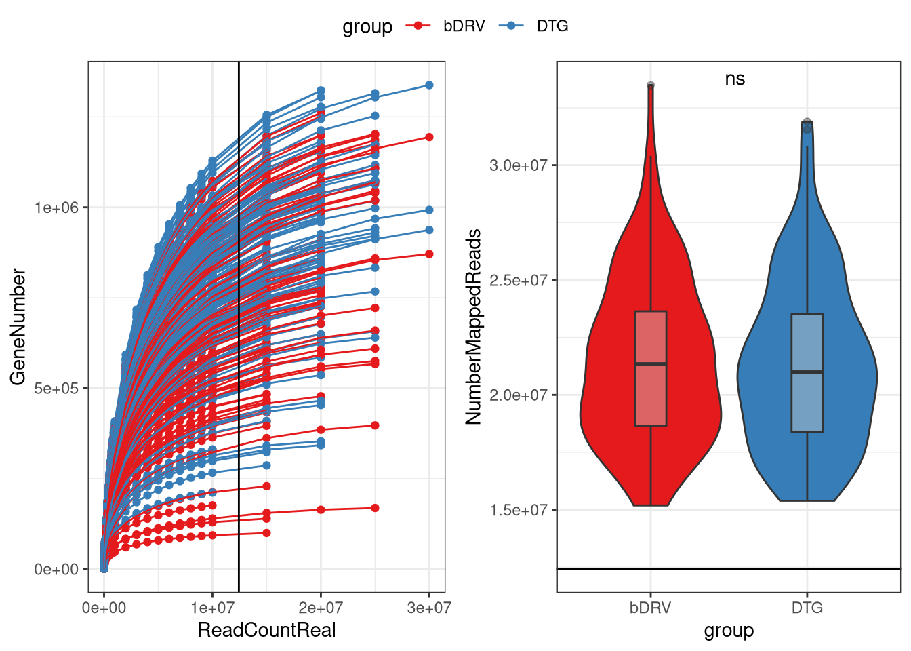
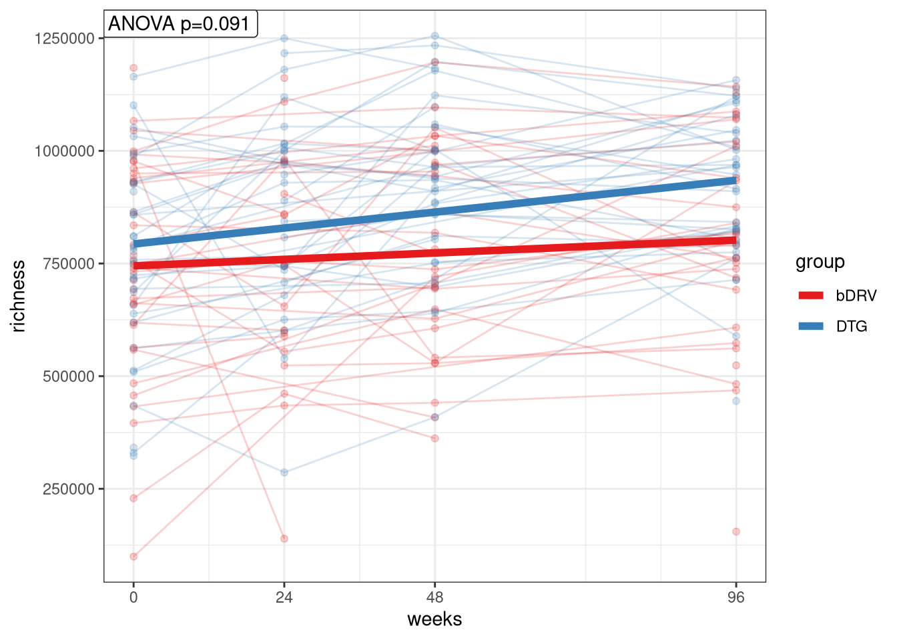
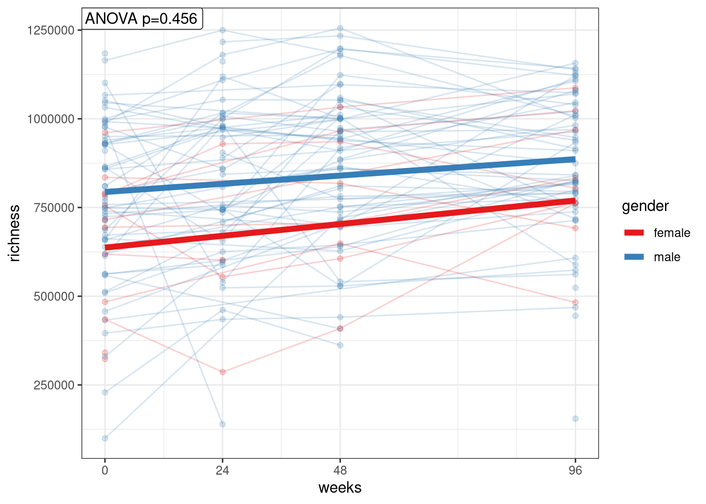
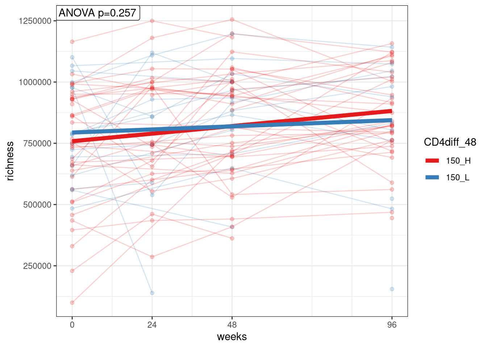
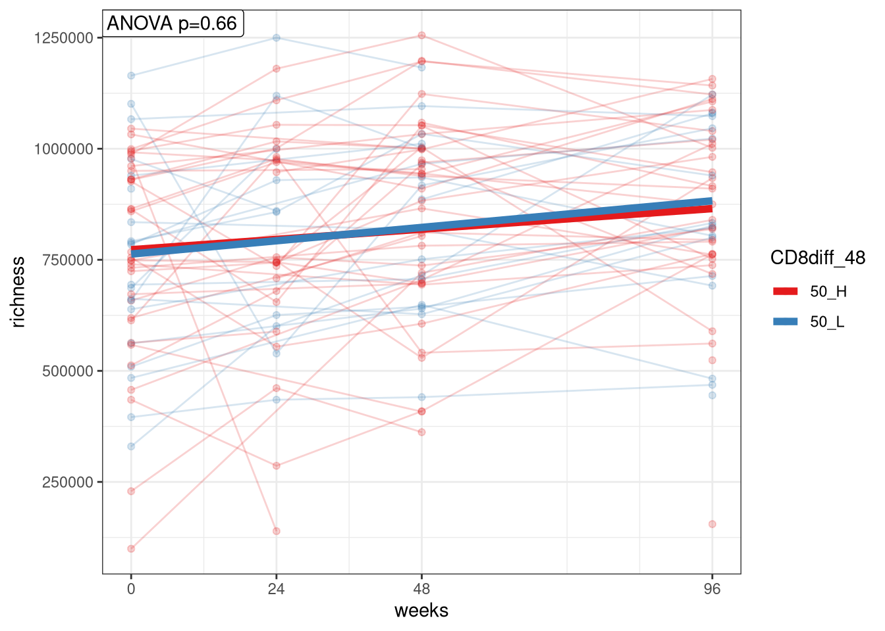
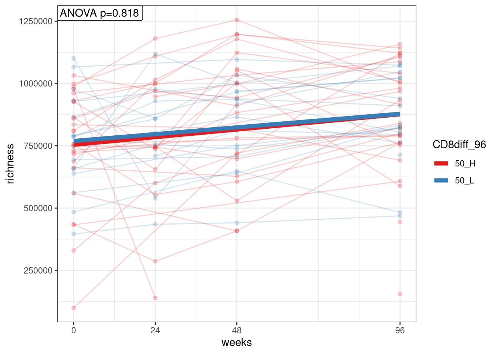
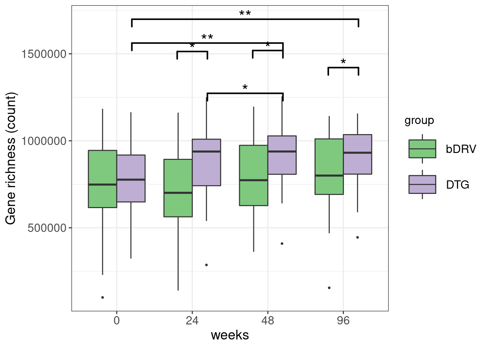

Diversity_GeneRichness
2022-09-16
Last updated: 2022-09-16
Checks: 6 1
Knit directory: advanz4/
This reproducible R Markdown analysis was created with workflowr (version 1.7.0). The Checks tab describes the reproducibility checks that were applied when the results were created. The Past versions tab lists the development history.
The R Markdown file has unstaged changes. To know which version of
the R Markdown file created these results, you’ll want to first commit
it to the Git repo. If you’re still working on the analysis, you can
ignore this warning. When you’re finished, you can run
wflow_publish to commit the R Markdown file and build the
HTML.
Great job! The global environment was empty. Objects defined in the global environment can affect the analysis in your R Markdown file in unknown ways. For reproduciblity it’s best to always run the code in an empty environment.
The command set.seed(20211203) was run prior to running
the code in the R Markdown file. Setting a seed ensures that any results
that rely on randomness, e.g. subsampling or permutations, are
reproducible.
Great job! Recording the operating system, R version, and package versions is critical for reproducibility.
Nice! There were no cached chunks for this analysis, so you can be confident that you successfully produced the results during this run.
Great job! Using relative paths to the files within your workflowr project makes it easier to run your code on other machines.
Great! You are using Git for version control. Tracking code development and connecting the code version to the results is critical for reproducibility.
The results in this page were generated with repository version df7195b. See the Past versions tab to see a history of the changes made to the R Markdown and HTML files.
Note that you need to be careful to ensure that all relevant files for
the analysis have been committed to Git prior to generating the results
(you can use wflow_publish or
wflow_git_commit). workflowr only checks the R Markdown
file, but you know if there are other scripts or data files that it
depends on. Below is the status of the Git repository when the results
were generated:
Ignored files:
Ignored: .RData
Ignored: .Rhistory
Ignored: .Rproj.user/
Ignored: analysis/.Rhistory
Ignored: data/mre.rds
Untracked files:
Untracked: analysis/figure/310_IGC_analysis.Rmd/
Untracked: analysis/figure/320_Beta_Diversity.Rmd/silhouette_analysis-1.png
Untracked: output/general_boxplot_stats.csv
Untracked: output/group_pvals_cat.tsv
Unstaged changes:
Modified: advanz4.Rproj
Modified: analysis/310_IGC_analysis.Rmd
Modified: analysis/320_Beta_Diversity.Rmd
Modified: analysis/410_Taxonomy_Exploration.Rmd
Modified: analysis/420_Taxonomy_DA.Rmd
Modified: code/Paired_wilcox_NA_Handler.R
Modified: output/general_boxplot_stats
Modified: output/group_pvals.csv
Modified: output/mre_data/CatalogMapping/IGC/lmm/lmm_time_point_by_group.pdf
Modified: output/overall_pvals.csv
Note that any generated files, e.g. HTML, png, CSS, etc., are not included in this status report because it is ok for generated content to have uncommitted changes.
These are the previous versions of the repository in which changes were
made to the R Markdown (analysis/310_IGC_analysis.Rmd) and
HTML (docs/310_IGC_analysis.html) files. If you’ve
configured a remote Git repository (see ?wflow_git_remote),
click on the hyperlinks in the table below to view the files as they
were in that past version.
| File | Version | Author | Date | Message |
|---|---|---|---|---|
| Rmd | 272d281 | cblazquez-irsi | 2022-09-13 | added stats to IGC boxplots |
| html | 272d281 | cblazquez-irsi | 2022-09-13 | added stats to IGC boxplots |
| Rmd | 972f1c0 | cblazquez | 2022-09-12 | Added gene richness boxplots |
| html | 972f1c0 | cblazquez | 2022-09-12 | Added gene richness boxplots |
| Rmd | 0aa7922 | cblazquez | 2022-06-07 | Improved S.parasanguinis interaction plots with inflammation markers |
| html | 0aa7922 | cblazquez | 2022-06-07 | Improved S.parasanguinis interaction plots with inflammation markers |
| Rmd | 3fa20ba | cblazquez | 2022-06-02 | Added species v inflammation |
| html | 3fa20ba | cblazquez | 2022-06-02 | Added species v inflammation |
| html | 9713823 | cblazquez | 2022-05-27 | Added longitudinal DA with ANCOM in 420_Taxonomy_DA.Rmd |
| Rmd | 28f4f36 | cblazquez | 2022-05-23 | started with ADV+Entero analysis |
| Rmd | 2a1fe84 | cblazquez | 2022-04-28 | Fixed rmd integration to wflow_build() |
| html | 2a1fe84 | cblazquez | 2022-04-28 | Fixed rmd integration to wflow_build() |
| Rmd | f213c10 | cblazquez-irsi | 2022-04-19 | reworked basal analysis |
| Rmd | 93ba24c | cblazquez | 2022-04-05 | added delta CD4/CD8 density plot to 335_BLMicrobiome.RMd |
| html | 93ba24c | cblazquez | 2022-04-05 | added delta CD4/CD8 density plot to 335_BLMicrobiome.RMd |
| Rmd | 7d67e12 | cblazquez-irsi | 2022-03-29 | Fixed commented bugs |
| html | 7d67e12 | cblazquez-irsi | 2022-03-29 | Fixed commented bugs |
| Rmd | eba3a18 | Marc Noguera-Julian | 2022-03-29 | comments for Carlos |
| html | e253850 | cblazquez | 2022-03-29 | worked on NMDS |
| Rmd | c51687a | cblazquez | 2022-03-28 | fixed workflowrs and gene richness issues |
| html | c51687a | cblazquez | 2022-03-28 | fixed workflowrs and gene richness issues |
| Rmd | 11c1e7d | cblazquez | 2022-03-28 | Code reorganized towards new structure |
Sequencing throupghput analysis
First we’ll check how well the sequencing went by looking at the read count distribution among all samples and how many of them will be dropped once we rarefy the samples
#### This chunk is for updating the mre internally as new variables come out. Once the final mre is done this chunk will be removed.
devtools::load_all("../WMGSPipeline/")suggested package selbal vsuggested package DataExplorer vsuggested package lme4 vsuggested package merTools vmymre <- filter_samples(mre = mymre, sample_ids = metadata$SampleID)
mymre@metadata@metadata_df <- as_tibble(metadata)
mymre@metadata@categorical_vals <- here::here("Metadata", "CategoricalVariables.txt") %>%
read.delim(., header = T) %>%
tibble()
mymre@metadata@numeric_vals <- here::here("Metadata", "NumericalVariables.txt") %>%
read.delim(., header = T) %>%
tibble()
mymre@metadata@longitudinal_vals <- here::here("Metadata", "LongitudinalVariables.txt") %>%
read.delim(., header = T) %>%
tibble()
only 6 samples have been discarded by low read count. The threshold used for filtering was the 2nd percentile, which equals 11888709 reads.
Rarefaction and sequencing depth
We’ll control first for the effect of sequencing depth over Gene richness and try to stablish a proper rarefaction threshold.

Rarefaction and sequencing depth
We’ll control first for the effect of sequencing depth over Gene richness and try to stablish a proper rarefaction threshold.
Data shows there is no bias created by sequencing depth between groups, and a threshold over the 2nd percentile is appropiate.
Longitudinal evolution: LMMs
We’ll start studying the longitudinal effect of treatment group over gene richness. For such purpose, we’ll use Linear mixed models using patients as random effect and an interaction of treatment group and time as fixed effects with the following lme4 formula:
richness ~ group*time_point + (1|ID)
We found trouble fiting the LMMs for ethnic groups due to patient A024 being the only one with the category “unknown”. As the model can’t estimate variance from only one observation, the code breaks.
$`1`
$`2`
$`3`
$`4`
$`5`
attr(,"class")
[1] "list" "ggarrange"There is a pretty clear evolution in every one of the treatment groups. However the evolution rate seems pretty similar between both treatment groups. The models fail to find a great difference in gene richness evolution, althougha slight yet significant increasing trend (slope value = 0.027), can be found in the DGT group (Group 1).
However, creating a single LMM with treatment group as a random effect we can measure the actual difference in the effect of timepoint over gene richness between two groups.
[1] "group" "risk_group" "center" "gender" "ethnic_group"
[6] "CD4diff_48" "CD8diff_48" "CD4after_48" "CD8after_48" "CD4diff_96"
[11] "CD8diff_96" "CD4after_96" "CD8after_96" [1] "group"
[1] "risk_group"
[1] "center"
[1] "gender"
[1] "ethnic_group"
[1] "CD4diff_48"
[1] "CD8diff_48"
[1] "CD4after_48"
[1] "CD8after_48"
[1] "CD4diff_96"
[1] "CD8diff_96"
[1] "CD4after_96"
[1] "CD8after_96"This shows a slight effect of treatment, where the effect of time over richness in group group2 is 0.025 (St.err = 0.025) times lower than the same for group 1 (ANOVA p=0.31)
$group
$risk_group
$center
$gender
$ethnic_group
$CD4diff_48
$CD8diff_48
$CD4after_48
$CD8after_48
$CD4diff_96
$CD8diff_96
$CD4after_96
$CD8after_96
dat <- TableList %>% pluck("group")
source("code/Paired_wilcox_NA_Handler.R")
long_test <- PairedWilcox_withNAs(myDF = dat,Variable = "richness",Response = "long_var",IDs = "link_var") %>%
rstatix::adjust_pvalue(p.col = "p") %>%
rstatix::add_significance(p.col = "p.adj") %>%
dplyr::mutate(y.position = y.position + 250000)
all_boxplot <- dat %>%
ggplot(., aes(x = as.factor(long_var),y=richness)) +
geom_boxplot(fill="lightgray") +
theme_bw() +
ggpubr::stat_pvalue_manual(data = long_test, label = "p.adj.signif", hide.ns = T, bracket.size = 1.1, label.size = 12) +
labs(x = "Week") +
theme(axis.text = element_text(size = 12),
axis.title = element_text(size = 14))
all_boxplotWarning: Removed 20 rows containing non-finite values (stat_boxplot).
write.csv(long_test, file = "output/general_boxplot_stats")There is a general increase even without stratifying
source("code/group_comparisons.R")
mockdat <- dat %>%
mutate(mock = "mock")
combn(unique(dat$long_var),2, simplify = F) %>%
map_dfr(function(comp){
comp <- sort(comp)
mockdat %>%
get_group_comparisons(dat = .,
link_var = "link_var",
long_var = "long_var",
cat_vector = "mock",
num_vector = "richness",
comps = comp,
type = "longitudinal"
) %>%
pluck("mock","richness","stats") %>%
dplyr::mutate(group1 = comp[1],
group2 = comp[2], .after=1)
}) %>%
dplyr::arrange(group1,group2) %>%
dplyr::mutate(group1 = as.character(group1),
group2 = as.character(group2)) %>%
dplyr::full_join(long_test, by=c("group1","group2")) %>%
dplyr::select(cat_var, contains("group"), median1, iqr2, median2, iqr2, medianChange, iqr_change, n1, n2, statistic, p.adj) %>%
write.csv(.,"output/overall_pvals.csv",quote = T,row.names = F) Warning: Removed 20 rows containing non-finite values (stat_boxplot).
Warning: Removed 13 rows containing non-finite values (stat_boxplot).Warning: Removed 4 rows containing non-finite values (stat_bracket).
This is even more intereseting, as most of the significant tchange happens in the DTG group, with significant differences in all time points, and significantly higher richnes in DTG vs DRV/r is found in al timepoints except 0.
source("code/group_comparisons.R")
cat_vector %>%
set_names() %>%
map(function(cv){
combn(unique(dat$long_var),2, simplify = F) %>%
map_dfr(function(comp){
comp <- sort(comp)
list_res <- boxplots %>%
pluck(cv, "data") %>%
get_group_comparisons(dat = .,
link_var = "link_var",
long_var = "long_var",
cat_vector = "cat_var",
num_vector = "richness",
comps = comp,
type = "longitudinal"
)
stat_df <-
list_res %>%
pluck("cat_var","richness","stats") %>%
dplyr::mutate(group1 = comp[1],
group2 = comp[2], .after=1) %>%
dplyr::mutate(group1 = as.character(group1),
group2 = as.character(group2))
test_df <-
list_res %>%
pluck("cat_var","richness","test")
res_df <-
dplyr::full_join(stat_df, test_df, by=c("cat_var","group1","group2")) %>%
dplyr::arrange(cat_var,group1,group2) %>%
dplyr::select(cat_var, contains("group"), median1, iqr2, median2, iqr2, medianChange, iqr_change, n1, n2, statistic, p)
})
})$group
# A tibble: 12 x 12
cat_var group1 group2 median1 iqr2 median2 medianChange iqr_change n1
<chr> <chr> <chr> <dbl> <dbl> <dbl> <dbl> <dbl> <int>
1 DRV/r 0 24 755107 374478. 654897 25499 222805. 17
2 DTG 0 24 834666. 312567. 973488. 98052 176412. 24
3 DRV/r 24 48 751418. 467287. 671618 -6817 190205. 18
4 DTG 24 48 909257 239801. 964298 51746 179725 28
5 DRV/r 24 96 755848 375121 815363 33540 161676 17
6 DTG 24 96 886425 247723. 958014. 47761 288152 24
7 DRV/r 0 48 751746 354480. 799986 47364. 199075 30
8 DTG 0 48 788174 279461 935456 112426 184921. 30
9 DRV/r 0 96 755107 350377. 790849 58874 182579. 27
10 DTG 0 96 786304 221308. 965992 154320. 204709. 31
11 DRV/r 48 96 773533 217306. 800115 27639 176071 28
12 DTG 48 96 917476 234882 947144 21814 215577. 31
# ... with 3 more variables: n2 <int>, statistic <dbl>, p <dbl>
$CD4diff_96
# A tibble: 12 x 12
cat_var group1 group2 median1 iqr2 median2 medianChange iqr_change n1
<chr> <chr> <chr> <dbl> <dbl> <dbl> <dbl> <dbl> <int>
1 150_H 0 24 755107 363016 755848 70786 313404. 22
2 150_L 0 24 978377 583364. 857580 65675 697720. 5
3 150_H 24 48 744607 343154. 938572 75225 190301 22
4 150_L 24 48 893415 203482. 984452. 131587 254005. 5
5 150_H 24 96 745798 301453. 922104 109176. 206820. 22
6 150_L 24 96 857580 490355 939568 33213 113397. 5
7 150_H 0 48 748944 328650. 818263 73708 213384 34
8 150_L 0 48 788174 147899. 935456 164482 79790 8
9 150_H 0 96 755107 275205. 839854 126401 152558 40
10 150_L 0 96 790040. 437621. 871840. 16462. 178483. 8
11 150_H 48 96 850663 248154. 875026 62544 234746 34
12 150_L 48 96 935456 273455 939568 -93881 188273 8
# ... with 3 more variables: n2 <int>, statistic <dbl>, p <dbl> # write.csv(.,"output/group_pvals_long.csv",quote = T,row.names = F)
cat_vector %>%
purrr::set_names() %>%
purrr::map(function(cv){
dat <- boxplots %>%
purrr::pluck(cv, "data")
comp <- combn(unique(dat$cat_var),2, simplify = F)[[1]]
get_group_comparisons(dat = dat,
link_var = "link_var",
long_var = "long_var",
cat_vector = "cat_var",
num_vector = "richness",
comps = comp,
type = "categorical"
) %>%
pluck("cat_var", "richness")
})$group
$group$stats
# A tibble: 8 x 6
# Groups: cat_var [2]
cat_var long_var median upper_ci lower_ci iqr
<chr> <int> <dbl> <dbl> <dbl> <dbl>
1 DRV/r 0 748385 948385 614476. 333909.
2 DRV/r 24 700943 910314. 551909. 358405.
3 DRV/r 48 773533 982808. 620399. 362409
4 DRV/r 96 800115 1014203. 663826 350377.
5 DTG 0 776668 923667. 641983. 281685.
6 DTG 24 938264 1011618. 739281 272338.
7 DTG 48 938572 1044632. 804957. 239675.
8 DTG 96 931461 1040301. 803331. 236970.
$group$test
# A tibble: 4 x 13
long_var estimate .y. group1 group2 n1 n2 statistic p conf.low
* <int> <dbl> <chr> <chr> <chr> <int> <int> <dbl> <dbl> <int>
1 0 -5325 num_var DRV/r DTG 35 35 599 0.879 -117800
2 24 -154404. num_var DRV/r DTG 18 28 156 0.0306 -322571
3 48 -146372 num_var DRV/r DTG 29 35 339 0.0227 -253601
4 96 -93766. num_var DRV/r DTG 29 34 349 0.0473 -217298
# ... with 3 more variables: conf.high <int>, method <chr>, alternative <chr>
$CD4diff_96
$CD4diff_96$stats
# A tibble: 8 x 6
# Groups: cat_var [2]
cat_var long_var median upper_ci lower_ci iqr
<chr> <int> <dbl> <dbl> <dbl> <dbl>
1 150_H 0 752026. 926533. 656602. 269930.
2 150_H 24 746989 984616. 690515 294101.
3 150_H 48 850663 1020655. 701302. 319353
4 150_H 96 839854 1049911 780933. 268978.
5 150_L 0 790040. 990543 763405. 227138.
6 150_L 24 857580 989167. 405803 583364.
7 150_L 48 935456 1022202. 874304. 147899.
8 150_L 96 871840. 1036385 598764. 437621.
$CD4diff_96$test
# A tibble: 4 x 13
long_var estimate .y. group1 group2 n1 n2 statistic p conf.low
* <int> <dbl> <chr> <chr> <chr> <int> <int> <dbl> <dbl> <int>
1 0 -74646. num_var 150_H 150_L 34 8 97 0.222 -250289
2 24 61627 num_var 150_H 150_L 21 5 59 0.705 -249202
3 48 -92680. num_var 150_H 150_L 32 7 90 0.44 -259424
4 96 29065 num_var 150_H 150_L 37 8 161 0.716 -144813
# ... with 3 more variables: conf.high <int>, method <chr>, alternative <chr> # write.table(.,"output/group_pvals_cat.csv",quote = T,row.names = F)
sessionInfo()R version 4.0.2 (2020-06-22)
Platform: x86_64-w64-mingw32/x64 (64-bit)
Running under: Windows 10 x64 (build 22000)
Matrix products: default
locale:
[1] LC_COLLATE=Spanish_Spain.1252 LC_CTYPE=Spanish_Spain.1252
[3] LC_MONETARY=Spanish_Spain.1252 LC_NUMERIC=C
[5] LC_TIME=Spanish_Spain.1252
attached base packages:
[1] stats graphics grDevices utils datasets methods base
other attached packages:
[1] nlme_3.1-148 metar_0.1.4 testthat_3.0.1 lmerTest_3.1-3
[5] lme4_1.1-27.1 Matrix_1.2-18 rstatix_0.7.0 ggpubr_0.4.0
[9] RColorBrewer_1.1-3 forcats_0.5.1 stringr_1.4.0 dplyr_1.0.8
[13] purrr_0.3.4 readr_2.0.1 tidyr_1.2.0 tibble_3.1.6
[17] ggplot2_3.3.5 tidyverse_1.3.1
loaded via a namespace (and not attached):
[1] utf8_1.2.2 tidyselect_1.1.2
[3] htmlwidgets_1.5.4 gmp_0.6-2
[5] grid_4.0.2 devtools_2.3.2
[7] aws.signature_0.6.0 munsell_0.5.0
[9] effectsize_0.4.5 codetools_0.2-16
[11] withr_2.5.0 colorspace_2.0-2
[13] Biobase_2.50.0 phyloseq_1.34.0
[15] highr_0.9 logger_0.2.2
[17] knitr_1.38 rstudioapi_0.13
[19] stats4_4.0.2 ipmisc_6.0.2
[21] ggsignif_0.6.3 labeling_0.4.2
[23] emmeans_1.7.1-1 git2r_0.28.0
[25] polyclip_1.10-0 datawizard_0.4.1
[27] bit64_4.0.5 farver_2.1.0
[29] rhdf5_2.34.0 rprojroot_2.0.3
[31] coda_0.19-4 vctrs_0.3.8
[33] generics_0.1.2 xfun_0.30
[35] BWStest_0.2.2 R6_2.5.1
[37] arm_1.12-2 BayesFactor_0.9.12-4.2
[39] reshape_0.8.8 rhdf5filters_1.2.1
[41] cachem_1.0.1 assertthat_0.2.1
[43] promises_1.2.0.1 networkD3_0.4
[45] scales_1.2.0 vroom_1.5.7
[47] merTools_0.5.2 gtable_0.3.0
[49] multcompView_0.1-8 processx_3.5.2
[51] workflowr_1.7.0 rlang_1.0.2
[53] MatrixModels_0.5-0 zeallot_0.1.0
[55] systemfonts_1.0.2 PMCMRplus_1.9.0
[57] splines_4.0.2 broom_0.8.0
[59] yaml_2.3.5 reshape2_1.4.4
[61] abind_1.4-5 modelr_0.1.8
[63] backports_1.4.1 httpuv_1.6.3
[65] tools_4.0.2 usethis_2.0.0
[67] logging_0.10-108 kableExtra_1.3.4
[69] ellipsis_0.3.2 jquerylib_0.1.4
[71] biomformat_1.18.0 selbal_0.1.0
[73] BiocGenerics_0.36.1 WRS2_1.1-3
[75] sessioninfo_1.1.1 Rcpp_1.0.7
[77] plyr_1.8.6 base64enc_0.1-3
[79] zlibbioc_1.36.0 ps_1.5.0
[81] prettyunits_1.1.1 pbapply_1.5-0
[83] cowplot_1.1.1 correlation_0.7.0
[85] S4Vectors_0.28.1 haven_2.3.1
[87] ggrepel_0.9.1 cluster_2.1.0
[89] fs_1.5.0 here_1.0.1
[91] DataExplorer_0.8.2 magrittr_2.0.2
[93] data.table_1.14.2 reprex_2.0.1
[95] mvtnorm_1.1-2 whisker_0.4
[97] pkgload_1.2.4 hms_1.1.1
[99] patchwork_1.1.1 mime_0.11
[101] evaluate_0.15 xtable_1.8-4
[103] pairwiseComparisons_3.1.6 broom.mixed_0.2.7
[105] readxl_1.3.1 IRanges_2.24.1
[107] gridExtra_2.3 compiler_4.0.2
[109] ggstatsplot_0.8.0 crayon_1.5.1
[111] minqa_1.2.4 htmltools_0.5.2
[113] mc2d_0.1-21 mgcv_1.8-31
[115] later_1.3.0 tzdb_0.3.0
[117] kSamples_1.2-9 SuppDists_1.1-9.5
[119] lubridate_1.8.0 aws.s3_0.3.21
[121] DBI_1.1.1 tweenr_1.0.2
[123] dbplyr_2.1.1 MASS_7.3-51.6
[125] boot_1.3-25 ade4_1.7-18
[127] car_3.0-12 wesanderson_0.3.6
[129] permute_0.9-7 cli_3.0.1
[131] parallel_4.0.2 insight_0.17.1
[133] igraph_1.2.9 pkgconfig_2.0.3
[135] statsExpressions_1.1.0 numDeriv_2016.8-1.1
[137] paletteer_1.4.0 xml2_1.3.2
[139] foreach_1.5.2 svglite_2.0.0
[141] bslib_0.3.1 blme_1.0-5
[143] webshot_0.5.2 multtest_2.46.0
[145] XVector_0.30.0 estimability_1.3
[147] rvest_1.0.1 callr_3.7.0
[149] digest_0.6.29 parameters_0.18.1
[151] vegan_2.5-7 Biostrings_2.58.0
[153] rmarkdown_2.11 cellranger_1.1.0
[155] curl_4.3 shiny_1.7.1
[157] gtools_3.9.2 nloptr_1.2.2.3
[159] lifecycle_1.0.1 jsonlite_1.7.2
[161] Rhdf5lib_1.12.1 carData_3.0-5
[163] viridisLite_0.4.0 desc_1.4.1
[165] fansi_0.5.0 pillar_1.7.0
[167] lattice_0.20-41 fastmap_1.1.0
[169] httr_1.4.2 pkgbuild_1.2.0
[171] survival_3.1-12 glue_1.5.1
[173] remotes_2.4.0 bayestestR_0.12.1
[175] iterators_1.0.14 bit_4.0.4
[177] performance_0.7.3 ggforce_0.3.3
[179] stringi_1.7.6 sass_0.4.0
[181] rematch2_2.1.2 memoise_2.0.0
[183] Rmpfr_0.8-4 ape_5.5